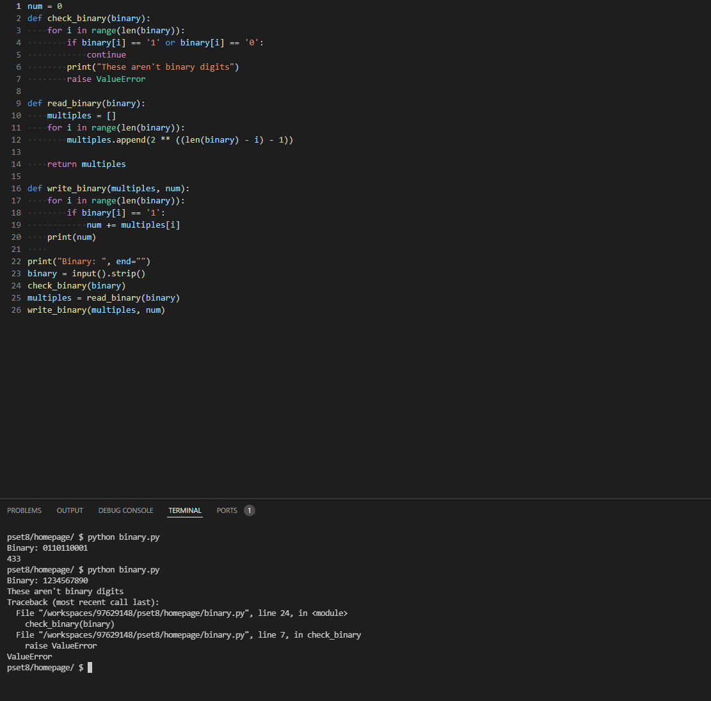

This is my download link and documentation to the python binary to digit conversion system.
Documentation
This code has 26 lines, it's a short program. But its technicality is impressive
What it does is ask the user for input, and strip whitespace off. Then, it checks if the binary inputted is correct in case it has any special characters other than 0 and 1, then we make an array called multiples. This array includes each number's multiplier based on location of the number. Then we make a for loop that asks if the current binary digit is equal to 1, if so then add that current binary digit's multiplier to the number created, then output the number.

Download link
Here is the download link.